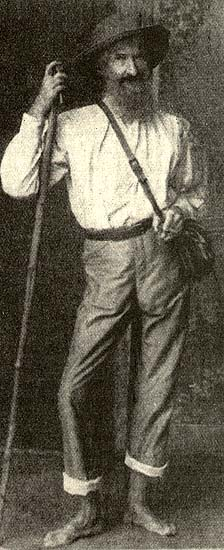

|
FRITZ MÜLLER: A NATURALIST IN BRAZIL. By David A West. Blacksburg (Virginia): Pocahontas Press.
Fritz
Müller was an important early Darwinian and frequent correspondent
with Darwin. Until now, nothing about Müller's life has been in
the public domain, apart from a series of pamphlets by his cousin,
Alfred Möller (1915-1921). To a linguistically challenged person
such as myself, Möller's German volume was as good as no
publication at all. David West has translated Möller's biography
and included previously unpublished information into a readable yet
carefully documented narrative.
Müller
left Germany for Brazil because of his radical political and religious
convictions. He was an atheist and advocate of "free love." In the face
of the clampdown on freedom of academic thought and speech in Germany
after 1848, most of us would have buckled under "the system," perjuring
ourselves by swearing allegiance to church and state for the sake of a
job.
Not
Müller. He ditched the middle-class sweetheart whose parents would
never have accepted his beliefs. He eschewed university positions in
zoology and medicine to which he had formerly aspired, and lived for a
while "in sin" with an uneducated laborer's daughter, Caroline Tollner.
Müller married her only because his sister insisted that
Caroline's life in Brazil would otherwise be ruined. The couple and
their young children emigrated in 1852 to become subsistence farmers in
Blumenau, a small German colony in southeastern Brazil.
Between
clearing forest, building his homestead, farming (no chainsaws, just
axe work), and defending against Indians, Müller somehow found
time to keep up with science. In 1856, he left the farm, becoming a
mathematics teacher in the high school in Desterro, on the coast. He
had always preferred walking barefoot in the forest, so he found shoes
irksome when confined to the city.
But
freedom from agricultural labor gave him time to study the diversity of
local animals and plants. He read Darwin's On the Origin of Species
soon after it appeared. His major book "Für Darwin: Facts and
Arguments for Darwin" (1869. London: J. Murray) was an extraordinary reductio ad absurdum
of alternatives to Darwin, based on an early cladistic phylogeny of
crustaceans. He discovered "Müllerian bodies," egg-like food
provided by the petioles of Cecropia leaves (Moraceae) to the
mutualistic Azteca ants that protect them, and did important
research on marine invertebrates. Until his death, he spent most of his
time (when not teaching or farming) as a field naturalist, gathering
data on tropical biology.
|
|

Müller in 1866, with characteristic bare feet
Müller's
greatest discovery is still, for me, Müllerian mimicry. In 1879, he
used his flair for mathematics to show that one unpalatable, warningly
colored species would benefit from resemblance to another unpalatable
species by a factor equal to the square of the inverse ratio of the
species' relative abundances.
With this nonintuitive result, based on
simple algebraic assumptions about predator behavior, Müller must
surely be the first mathematical evolutionary ecologist, as well as one
of the most widely known, even to this day. His was also the first
model of density-dependent selection (long before frequency-dependent
and frequency-independent selection had been distinguished), and the
first mathematical treatment of any mutualism.
David
West should be congratulated for enabling a much richer understanding
of this extraordinarily gifted naturalist than was previously possible.
And what a pleasant surprise to learn just how unconventional and yet
principled Müller was in everyday life!
JAMES MALLET
Galton Laboratory, University College London, London, United Kingdom |